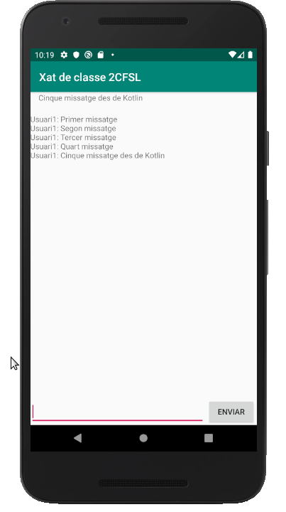

Bases de Dades
3.3.3 RD-Android: Tot l'exemple
Tot l'exemple
Anem a posar tot l'exemple que arreplega tot l'anterior.
La classe Missatge :
class Missatge(val nom: String, val contingut: String) {}I el programa seria aquest:
import androidx.appcompat.app.AppCompatActivity
import android.os.Bundle
import com.google.firebase.database.*
import kotlinx.android.synthetic.main.activity_main.*
class MainActivity : AppCompatActivity() {
override fun onCreate(savedInstanceState: Bundle?) {
super.onCreate(savedInstanceState)
setContentView(R.layout.activity_main)
boto.text = "Enviar"
// Referències a la Base de Dades i a les variables a1, nomXat i xat
val database = FirebaseDatabase.getInstance()
val refA1 = database.getReference("a1")
val nomXat = database.getReference("nomXat")
val xat = database.getReference("xat")
// Exemple de guardar dades. Primer sobre a1, i despŕes sobre la llista xat
boto.setOnClickListener {
refA1.setValue(text.text.toString())
xat.push().setValue(Missatge("Usuari1", text.text.toString()))
text.setText("")
}
// Exemple de listener de lectura única addListenerForSingleValue()
// Per a posar el títol. Sobre nomXat
nomXat.addListenerForSingleValueEvent(object : ValueEventListener {
override fun onDataChange(dataSnapshot: DataSnapshot) {
val value = dataSnapshot.getValue(String::class.java)
setTitle(value)
}
override fun onCancelled(error: DatabaseError) {
}
})
// Exemple de listener de lectura contínua addValueEventListener()
// Per a posar l'últim missatge registrat. Sobre a1
refA1.addValueEventListener(object : ValueEventListener {
override fun onDataChange(dataSnapshot: DataSnapshot) {
val value = dataSnapshot.getValue(String::class.java)
ultim.setText(value)
}
override fun onCancelled(error: DatabaseError) {
}
})
// Exemple de listener d'una llista addChildEventListener()
// Per a posar tota la llista de missatges. Sobre xat
xat.addChildEventListener(object : ChildEventListener {
override fun onChildAdded(dataSnapshot: DataSnapshot, s: String?) {
area.append(
dataSnapshot.child("nom").getValue(String::class.java) + ": " + dataSnapshot.child("contingut").getValue(String::class.java) + "\n" );
}
override fun onChildChanged(dataSnapshot: DataSnapshot, s: String?) {
}
override fun onChildRemoved(dataSnapshot: DataSnapshot) {
}
override fun onChildMoved(dataSnapshot: DataSnapshot, s: String?) {
}
override fun onCancelled(databaseError: DatabaseError) {
}
})
}
}
I el resultat seria aquest:
